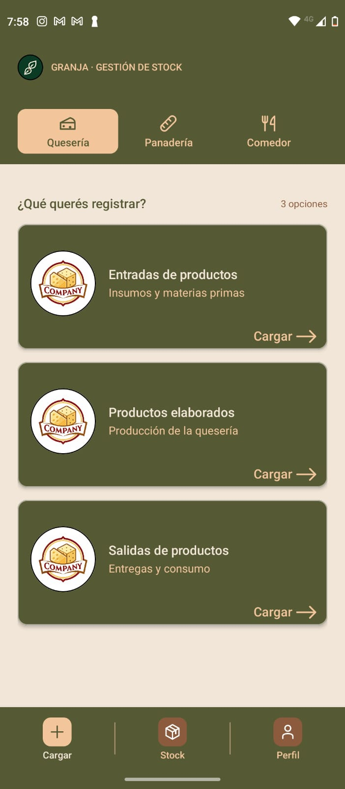
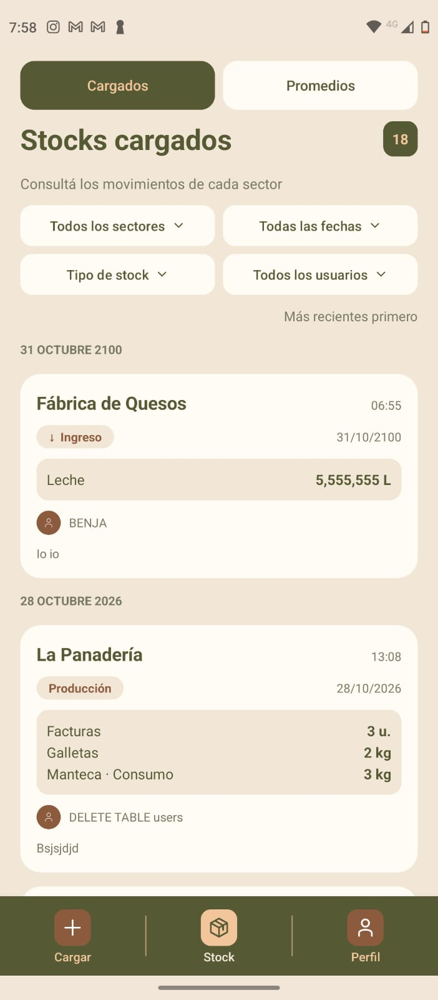
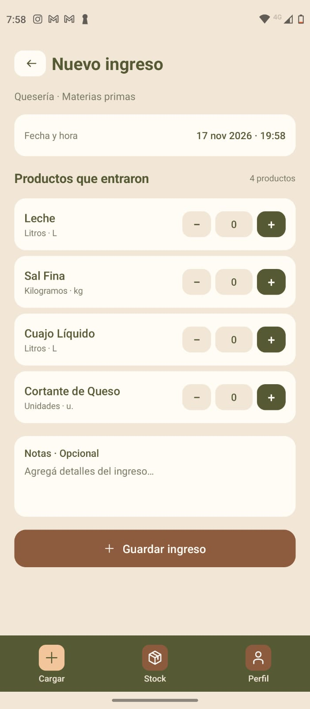
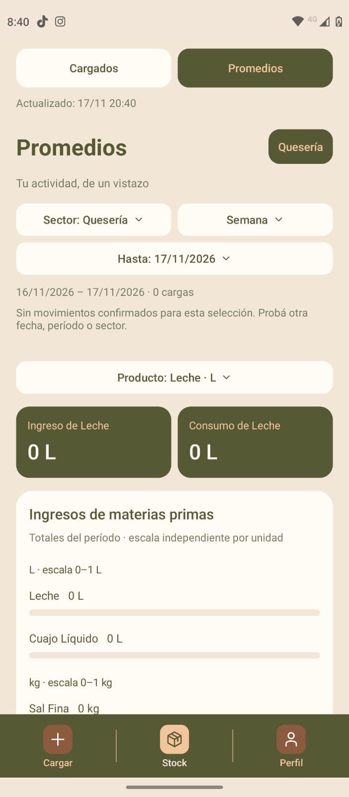
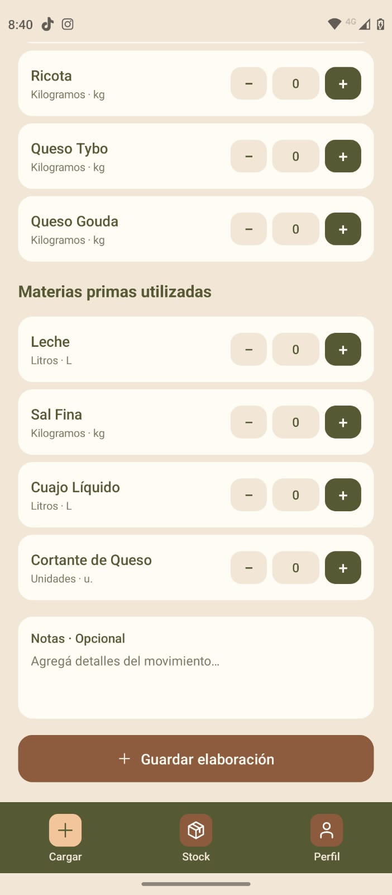
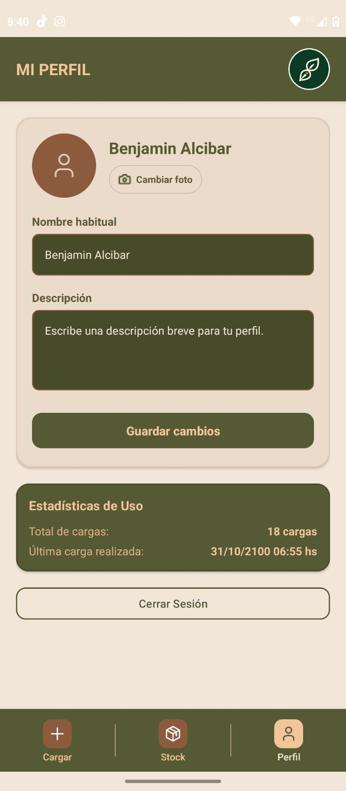
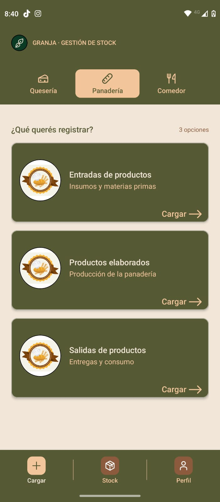

Proyecto destacado / Aplicación01
Croma.
La gestión de productos de la Escuela Granja de Tandil, en una app.














El problema
Organizar los productos y sus movimientos entre el comedor escolar, la fábrica de quesos y la panadería.
Mi aporte
Desarrollé Croma para gestionar esos productos. Las pantallas muestran el registro de ingresos, la producción y la consulta de stock.
Explorá la aplicación
Seleccioná una captura para verla completa y recorrer sus detalles.